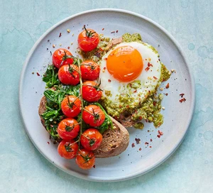

Healthy pesto eggs on toast

Description
Try a speedy, low-fat pesto as a delicious alternative to oil for frying eggs - it adds great flavour to the
dish, too, to make a perfect brunch or lunch.
Ingredients
- 2-4 thin slices rye sourdough
- 2 eggs
- 170g tomatoes on the vine
- 160g baby spinach
- pinch of chilli flakes
- pesto
Steps
- Toast the bread.
- Cook the pesto in a frying pan over medium heat for 30 seconds, then add the eggs to one side of the pan and
the tomatoes to the other. Fry in the pesto until the eggs are cooked to your liking.
- Lift the eggs out of the pan and put each one on a slice of toast. Add the spinach to the pan, turn the heat
up to high and cook for 2-3 mins.
- Spoon onto the other slice of toast and sprinkle with chilli flakes.